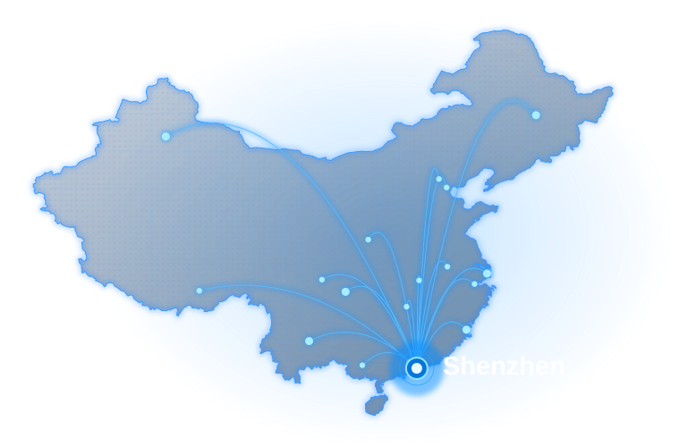

Shanghai — Incomplete Historical Residence Records
- Challenge
- Incomplete historical residence records.
- How we helped
- Reviewed available documents, prepared authorization and coordinated the Shanghai application.
Document services
Professional support for former foreign residents who need a China police certificate for overseas immigration, employment or further study.

Can you apply after leaving China?
Former foreign residents may be able to apply for a China police certificate after leaving China. The available route depends on the city, your residence records and the receiving authority’s requirements.
Check if you are eligible
Our process
Understand your residence history and destination requirements.
Confirm the plan, fee and any necessary authorization.
Coordinate with the relevant authority where permitted.
If issued, check details and arrange any required authentication.
Arrange tracked international delivery where available.
The issuing authority determines availability, approval and timing. Read the complete service process →
Real case experience
China PCC procedures can vary by city and by the applicant’s available records. These anonymized examples show how different cases were assessed and handled.
View All Case Studies →These are anonymized service records, not customer reviews. Requirements, processing times and outcomes vary by city and individual circumstances; past results do not guarantee the same outcome.
Check My China PCC Case →Common questions
Some applications may be handled through an authorized representative, depending on the city, the responsible authority, your identity and residence records, and local authorization rules.
Timing depends on the city, responsible authority, record availability and any later notarization or legalization. We can provide a case-specific estimate after reviewing the documents, but the issuing authority controls the result and timing.
Requirements depend on the city and your records.
We review your residence history, passport and visa records, and the requirements of the authority you are applying to. Based on this, we recommend whether your PCC should be translated, notarized, apostilled or fully legalized by a consulate.
Read the destination guide →Your application, carefully assessed
Overseas case support after leaving China. Global Attest helps former foreign residents assess and coordinate China police-certificate applications for immigration, visa, work, apostille and legalization use.
Trusted by clients applying to Canada, Australia, the UK, the US and more.
Review My Remote Application OptionsYou can start online by sending Global Attest a summary of your case. We review your residence history, available records and destination requirements before confirming whether a locally permitted representative application is possible without your return to China. The national Rules on Public Security Organs Handling Criminal Record Inquiries provide the general framework, while allowing local authorities to organize their own receiving channels.
Global Attest checks these details before starting your application, so you understand whether a standard police certificate, notarized certificate, apostille or consular legalization is likely to be required.
| Situation | Remote Route |
|---|---|
| Former employee in China | May be possible after the responsible authority confirms the records and route |
| Former student in China | May be possible if identity and residence records can be matched |
| Lived in multiple cities | Case-by-case; some cities may require separate records |
| Need apostille or legalization | Depends on the destination and the document accepted for the next step |
Our China PCC power of attorney guide for overseas applicants explains the authorization preparation questions within this service process.
Tell us which Chinese city you stayed in, your length of stay, visa type and destination country. We will assess feasibility, confirm the cities involved and provide an estimated processing time.
After you confirm the quotation and processing route, you may pay the service fee via international transfer. We will immediately start preparing the necessary application documents for your China PCC.
With our guidance you will prepare the required supporting documents, such as a power of attorney, scans of your current and previous passports, police registration forms, and other documents requested by local authorities.
Where the local authority permits authorized handling, our China-side team can coordinate submission to the relevant Public Security Bureau / Exit-Entry Administration and follow up on the authority's response.
If the China Police Certificate is issued, we will first send you a scanned copy for verification of your personal details and the covered residence period. Once the details are confirmed, we can proceed with the required translation, notarization, apostille or consular legalization, as applicable.
If the required documents are issued and cleared for delivery, the originals and any completed notarial certificate, apostille or consular legalization can be sent by trackable international courier.
Transparent planning
Our China Police Certificate service fee usually starts from USD 450. The final price depends on the number of cities involved, your visa and residence history, and whether notarization, Hague apostille or embassy / consular legalization is required.
Some straightforward cases may take around 7-10 business days after the required documents are ready, but this is an estimate rather than a guaranteed authority timetable. The city, record checks, issuing office and any notarization, apostille, consular legalization or multi-city work can change the timing.
Want to know the cost and timeline for your own case? Fill out the contact form and we will get back to you as soon as possible.
Different countries and authorities may ask for different supporting steps after the China police certificate is issued. We help former foreign residents prepare China PCC documents for immigration, PR, visa, work, study and background-check use worldwide.
Applicants for Canada PR are often asked to provide police certificates from countries where they lived for a required period. A China police certificate may need to match IRCC expectations for names, dates, residence period and supporting translation or notarization.
Australian visa applicants may need a China police certificate if they previously lived, worked or studied in China. We help check whether the certificate should be notarized, translated, apostilled or legalized for submission.
UK employers, visa processes and professional background checks may request evidence of no criminal record from China. The required format can depend on the receiving organization.
For US immigration, employment screening or overseas documentation, applicants may need a police certificate plus notarial or legalization steps. We review the destination requirement before confirming the route.
If your destination is New Zealand, Spain or another European country, the certificate format and authentication route may differ. We check whether translation, notarization, apostille or consular legalization is needed.
If a foreign authority asks you to provide a China PCC or no criminal record certificate, we can review the requirement and help arrange the China-side application and supporting authentication steps.
We review your residence history, passport and visa records, and the requirements of the authority you are applying to. Based on this, we recommend whether your PCC should be translated, notarized, apostilled or fully legalized by a consulate.
Use this quick guide to understand the main requirements before you start. If your case involves multiple cities, old passports or missing records, we recommend checking feasibility first.
A China Police Clearance Certificate (PCC), also known as a China Police Certificate or No Criminal Record Certificate, is an official document issued by the Public Security Bureau (PSB). It confirms whether an individual has any criminal record during their stay in China. This document is commonly required for immigration, permanent residency, work visas, citizenship applications, overseas employment, and academic admissions.
Whether you need a China PCC depends on the receiving authority’s instructions and your China residence history. We review the requested cities, residence periods and document format before confirming the application route.
If you resided in more than one city in China, separate certificates may be required from each city depending on local PSB policies. Cities such as Beijing, Shanghai, Guangzhou, Shenzhen, Hangzhou, Chengdu and others may have different document requirements and processing routes.
The receiving authority decides how recent your China PCC must be. Its issue date, covered residence period and any return visits to China may affect whether an existing certificate is suitable. Send us the relevant checklist or request letter before ordering a new certificate.
Applicants commonly use China PCC for Canada Express Entry, Australian Skilled Migration, UK Skilled Worker visa, US immigration processing, and other global visa categories. Each country may require translation, notarization, apostille, or consular legalization.
Before you apply
Timing depends on the city, responsible authority, record availability and any later notarization or legalization. We can provide a case-specific estimate after reviewing the documents, but the issuing authority controls the result and timing.
Some applications may be handled through an authorized representative, depending on the city, the responsible authority, your identity and residence records, and local authorization rules.
Returning to China may not be necessary where the responsible authority accepts authorized handling, but this must be confirmed for the relevant city and case.
You may need to provide both your current passport and the passport used during your stay in China. Name, passport number and residence dates should be checked carefully before submission.
Some cases require records or certificates from more than one city. We review your China residence history before confirming the best route.
Fingerprint requirements vary by city and destination country. If fingerprints are required, we will explain the acceptable format before you prepare the form.
If the documents are issued and any required later steps are completed, international courier delivery can be coordinated to an address accepted by the carrier.
In many cases, the China PCC can still be issued. We can contact the local police station or relevant local office to help verify the residence record or request a reissued registration document where the local procedure allows it.
For immigration or overseas submission, notarization or legalization is often required.
Use the China Police Certificate Guides hub to choose guidance for residence records, multiple cities, document problems and destination-specific use.
Start with your case
Tell us your former city, residence dates and destination.
We’ll help you understand the next steps.